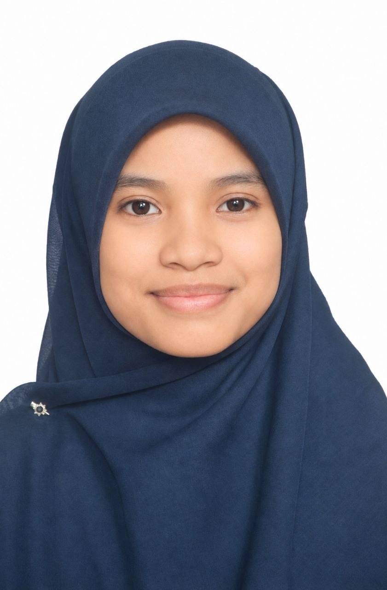

NAME: NUR SHAZWINA IRDINA BINTI MUHAMAD SHAHRIZAL
DATE OF BIRTH: 30 APRIL 2008
HOMETOWN: KULIM, KEDAH
COURSE: FOUNDATION IN ACCOUNTING AND MUAMALAT
SIBLINGS: 4
AMBITION: PROFESSIONAL ACCOUNTANT
HOBBIES:
FUTURE GOALS: